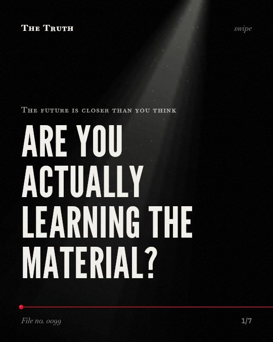

The future is closer than you think
Are you actually learning the material?

Removing AI access causes a 17% grade drop.
Students who used GPT-4 perform worse than those who never had access. This result is mixed and depends on how the tool is used.
Supported. At least one solid peer-reviewed study. The evidence is mixed.
What the research found
When access to GPT-4 is taken away, students perform worse than those who never had access, with a 17% reduction in grades for GPT Base.
“we additionally find that when access is subsequently taken away, students actually perform worse than those who never had access (17% reduction in grades for GPT Base)”
Experiment, 2025. Bastani et al., Proceedings of the National Academy of Sciences.
Having GPT-4 access while solving problems makes performance improve by 48% for GPT Base and 127% for GPT Tutor.
“our results show that having GPT-4 access while solving problems significantly improves performance (48% improvement in grades for GPT Base and 127% for GPT Tutor).”
Experiment, 2025. Bastani et al., Proceedings of the National Academy of Sciences.
AI creates a performance gap.
Access to GPT-4 can improve performance by 127% for some. However, without proper design, the tool becomes a crutch that hinders actual skill acquisition.
Your progress may be an illusion.
That may be why your scores go up while your understanding stays flat. You might be learning how to use the tool rather than the subject.
This part is our reading of the evidence, not a finding.
The laptop glows in a dark room.
You stare at a complex math problem. You prompt the screen. The answer appears instantly. You move to the next one without thinking about the first.
The honest summary
The evidence shows that AI can improve immediate performance and proficiency, but without proper guardrails or pedagogical design, it can hinder the actual acquisition of skills.
The effectiveness of AI tools varies significantly depending on factors like tool functionality, course design, and the presence of specific safeguards.
Are you learning or just finishing?
Sources
- Hamsa Bastani, Osbert Bastani, Alp Sungu et al. (2025). Generative AI without guardrails can harm learning: Evidence from high school mathematics. Proceedings of the National Academy of Sciences. Experiment, cited 252 times.
Also read for this file, not quoted
- Wang et al. (2024). Does Chatting with Chatbots Improve Language Learning Performance? A Meta-Analysis of Chatbot-Assisted Language Learning.
- Alanazi et al. (2025). The Influence of Artificial Intelligence Tools on Learning Outcomes in Computer Programming: A Systematic Review and Meta-Analysis.
- Bagde et al. (2023). A systematic review and meta-analysis on ChatGPT and its utilization in medical and dental research.
- Kaboudi et al. (2024). Diagnostic Accuracy of ChatGPT for Patients' Triage; a Systematic Review and Meta-Analysis..
- Liu et al. (2025). The effect of embodied learning on students’ learning performance: A meta-analysis.
This file was researched and drafted by software, then checked by rules a model cannot talk its way around: each quote above was matched word for word against the paper, and every number had to appear in it. How files are made.